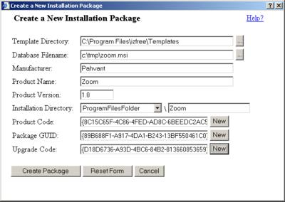
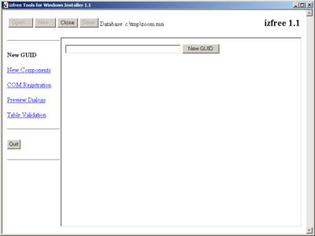
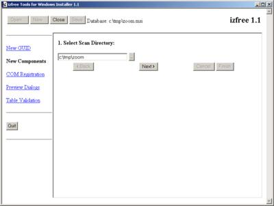
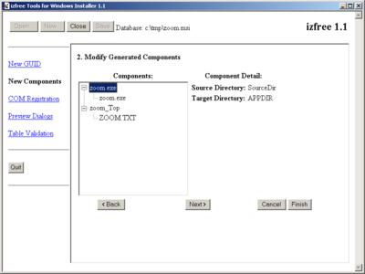
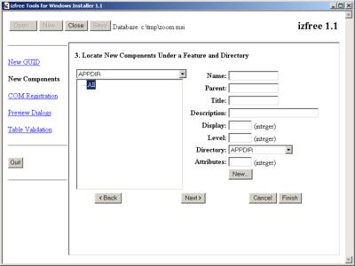
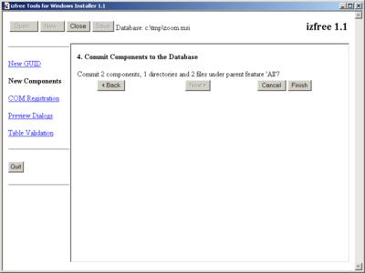

This tutorial installs the 'zoom.exe' console application and its associated manual page file 'ZOOM.TXT'. The files are copied onto the target machine and nothing more.
Zoom is a simple console program for resizing image files. It is available as a ZIP file containing the two files mentioned above.
Create the source/target directory structure.
Windows Installer allows the source directory structure and the target directory structure to have a different arrangement of subdirectories. To simplify the situation, izfree assumes that the target directory structure will be identical to the source directory structure. This can be changed later with Orca and knowledge of the Directory table in the MSI database.
Create a new directory somewhere on your machine and copy the files
and subdirectories into the new directory as they should be arranged
on the target machine. We'll call this the 'build directory'.
For zoom, make a local directory called
'c:\tmp\zoom' and copy zoom.exe and
ZOOM.TXT inside.
Launch izfree.
Click the "New..." button at the top left corner of the window to bring up the new package dialog.
Fill out the form for the new package. You can browse for the database
templates or the output database by clicking the '...' buttons to the right of
the input fields. The installation directory will be associated with the
APPDIR public property through entries in the
Directory table.
For the product code, package guid and upgrade code, you can click the 'New' buttons to generate new GUIDs for these fields. If you are re-creating an existing package or upgrading an existing package, then you should enter the appropriate GUIDs in the necessary fields.
Don't place the MSI database in the build directory unless you want
the MSI database installed with the product. Since this is typically
not necessary or desirable, its best to place the MSI database in
another location. We'll put it in 'c:\tmp'.
When you have finished entering the data, your form should look like this (but with different GUIDs):
|  | 12K PNG, 48K JPEG |
Click the 'Create Package' button to create a new package from the database templates. After the templates are combined to create a blank database, izfree uses the information you entered on the form to create a minimal set of required summary information and standard properties. The database will pass all internal consistency evaluators (ICEs) published with the MSI SDK.
After the database has been created, it becomes the current database in izfree. The current database in izfree is indicated at the top of the main window. When the current database has been modified, but not yet saved to disk, an asterisk will display to the right of the database filename. Once a database has been opened in izfree, tools for manipulating the database are shown in the pane on the left side.
|  | 9K PNG, 38K JPEG |
Select the 'New Components' tool.
Enter the directory containing your target directory layout. In this
example, the build directory 'c:\tmp\zoom' is
entered.
|  | 13K PNG, 54K JPEG |
Click the 'Next' button. A tree view of the components created from the scanned directory is displayed. Selecting an item in the tree view displays its corresponding source and target directories on the right.
|  | 13K PNG, 54K JPEG |
You can edit the names of the components (but not the files) by clicking the label in the tree view. Clicking the label the first time selects the label. Pause briefly and click the label again and it will change to an edit box, allowing you to enter a new component name.
Click the 'Next' button. Select the installation directory
and associated feature for the new components. In our case, the directory
is APPDIR, and the associated feature is All.
Using the form on the right, you can create a new feature if there are
no existing features or no appropriate feature exists.
|  | 13K PNG, 55K JPEG |
Click the 'Next' button. A summary of the information to be committed to the database is shown.
|  | 13K PNG, 55K JPEG |
Click the 'Finish' button to commit the generated file, component, and feature entries to the database.
izfree now displays an asterisk next to the database filename. This indicates that you have modified the database, but not yet saved the modifications to disk. Click the 'Save' button to save your database changes.
izfree creates an installation that expects the source
directory structure at the same level as the MSI file. Move the MSI
file from where you created it into the build directory. In this
case, we move 'zoom.msi' from 'c:\tmp' to
'c:\tmp\zoom'.
Your install is now complete and ready to use!
{kind=link}
{kind=link}
{kind=link}
{kind=link}
{kind=link}
{kind=link}
{kind=link}
{kind=link}
{kind=link}
{kind=link}
{kind=link}
{kind=link}